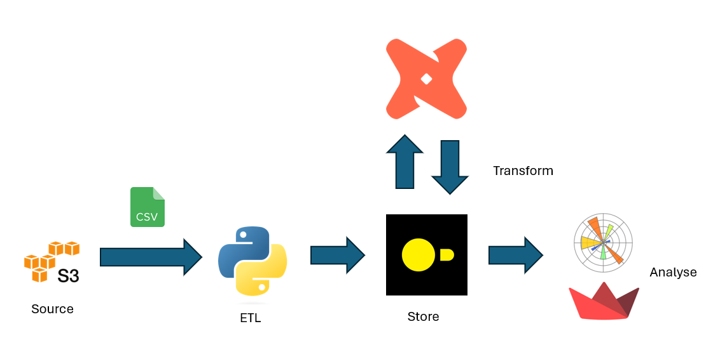
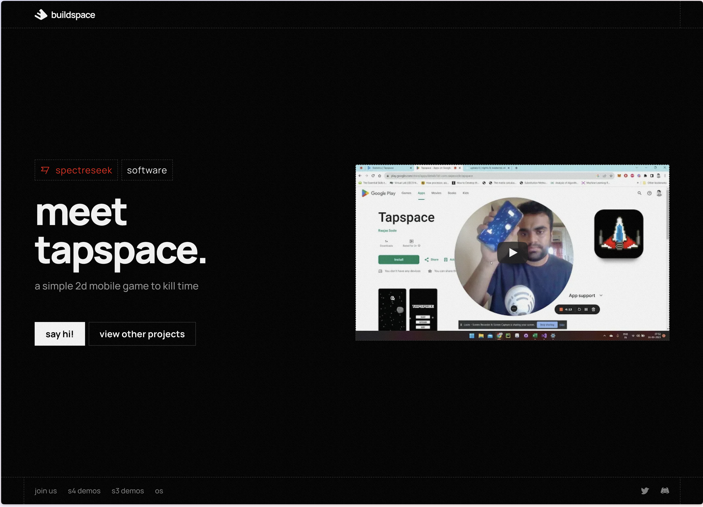

Raajas Sode | Data Professional
I talked about Data, and people listened.

I spoke at a data engineering meetup about my personal project.I don't know how it happened. I had an Idea to build an end-to-end pipeline in duckdb and dbt with a dashboard in streamlit. I wanted to work in climate data and this seemed like a good Idea to apply my data-modelling experience in a use-case I care about.
It's like a starter pack for my Climatology analysis. While building the project, I was approached by someone in the #DataEngBytes team, to see if I wanted to talk about my work. I didn't have much to say about my experience as a freelancer, but no one was stopping me from talking about my backyard hobby-shop projects
I build to occasionaly remind myself that Im not a total idiot without a manager. For someone who's been working remotely for 4 years (and counting), It was the first time I was speaking publicly (in person) to a crowd of people who were'nt paying me money to do my job.
I sort of felt the weight of expectations to not just give a quality presentation and add value but to also not put the audience to sleep. It was nerve racking, but hey, This was a new platform where I can share my work.This wasn't a test or a performance review. It was an oppurtunity I could use to tell a story through data.
It has inspired me to work further on my climateology analysis and build more stuff with new tools and techniques to understand what works and what doesn't. Seth Godin was write. This is making and sharing art. This was my first talk in a meetup and it was the most rewarding experience Ive had, sharing my data projects with an audience free of judgement and getting feedback that nurtures not only my project,
but also helps me grow as an engineer.
Check out this post to know more ....
Introduction to Climateology (In progress)

A while back I decided to update my portfolio. Now being a Data Engineer I was pretty stumped considering most of the work I did was on the cloud in a client owned data warehouse. So I had no clue what to make. I could make one of those end-to-end docker image processes with python scripts scrapping data, but I sort of wanted to interact more with an OLAP database, since that's what I've been working with for the past few years. Enter duckdb...An in process OLAP database that quickly processes large datasets and files. take a look at the project..
I built a mobile game from start to finish, and it doesn't suck.

I'm sorry, maybe it does a little. Its playable. And that was my goal. To push something to the playstore which people can download and go - "Hmm, that's cute.
Ive so many unity projects sitting in my github repo that drive me insane, because I didn't finish them. It drives me nuts that I didn't finish them. Every day.
I still feel if I have some time from my regular job I would definately invest time in building my low poly fps with zombies. But the goal with this game was to build something,
no overthinking, fast. So I joined a bootcamp called nights-and-weekends by this company called buildspace.
Check out the full demo ..."